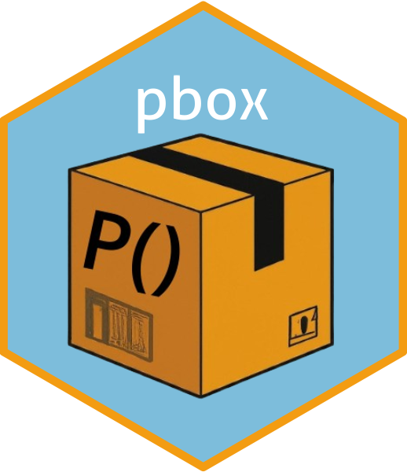

install.packages("pbox")pbox: Exploring Multivariate Spaces with Probability Boxes
… Last time
In a previous post I introduced the idea of a “probability box” — turning a dataset into a queryable probability space using Kernel Density Estimation. That was the prototype. After several months of work, the idea has become a proper R package, now on CRAN.
pbox

pbox is a statistical library for working with probability spaces derived from data. You give it a dataset, it builds a probability box — a structure that lets you query marginal, joint, and conditional probabilities while accounting for the correlation structure among variables via copula theory.
The design goal was to make probabilistic queries feel natural. Instead of writing custom integration code every time you want to ask “what’s the probability that X is above 30 and Y is between 25 and 35, given Z is around 26?”, pbox gives you a clean interface to express that directly.
Potential applications include environmental analysis (joint probabilities of climate variables), financial risk assessment, and any domain where understanding the joint behavior of multiple variables matters — not just their individual distributions.
This is a first release. I plan to add more functionality over time, and feedback or feature requests are welcome via the project repository.
Install from CRAN:
library(pbox)
data("SEAex", package = "pbox")Create a PBOX Object
Build a pbox object from the SEAex dataset using set_pbox. This fits the marginal distributions and the copula, and stores everything needed for subsequent queries.
# Set pbox
pbx <- set_pbox(SEAex)It seems your data might not be stationary!pbox object generated!print(pbx)Probabilistic Box Object of class pbox
||--General Overview--||
----------------
1)Data Structure
Number of Rows: 122
Number of Columns: 4
1.1)Variable Statistics:
var min max mean median
<char> <num> <num> <num> <num>
1: Malaysia 30.50 32.30 31.24344 31.20
2: Thailand 33.20 37.30 35.10656 35.10
3: Vietnam 30.90 32.90 31.63934 31.60
4: avgRegion 25.21 26.66 25.78951 25.73
----------------
2)Copula Summary:
Type: ellipCopula
Normal copula, dim. d = 4
Dimension: 4
Parameters:
rho.1 = 0.4922978
dispstr: ex
2.1)Copula margins:
[1] "RG" "SN1" "RG" "RG"
2.2)Kendall correlation:
Malaysia Thailand Vietnam avgRegion
Malaysia 1.0000000 0.1755378 0.3864290 0.5751234
Thailand 0.1755378 1.0000000 0.2246915 0.2472509
Vietnam 0.3864290 0.2246915 1.0000000 0.4424894
avgRegion 0.5751234 0.2472509 0.4424894 1.0000000
-------------------------------Explore Probability Space
The qpbox function handles all query types: marginal, joint, and conditional probabilities. The syntax is designed to be readable.
# Marginal Distribution
qpbox(pbx, mj = "Malaysia:33") P
0.9986981 # Joint Distribution
qpbox(pbx, mj = "Malaysia:33 & Vietnam:34") P
0.9981121 # Conditional Distribution
qpbox(pbx, mj = "Vietnam:31", co = "avgRegion:26") P
0.03647037 #Conditional Distribution with Fixed Conditions
qpbox(pbx, mj = "Malaysia:33 & Vietnam:31", co = "avgRegion:26", fixed = TRUE) P
0.976313 #Joint Distribution with Mean Values
qpbox(pbx, mj = "mean:c(Vietnam,Thailand)", lower.tail = TRUE) P
0.3803387 # Joint Distribution with Median Values
qpbox(pbx, mj = "median:c(Vietnam, Thailand)", lower.tail = TRUE) P
0.3597187 # Joint Distribution with Specific Values
qpbox(pbx, mj = "Malaysia:33 & mean:c(Vietnam, Thailand)", lower.tail = TRUE) P
0.3803302 # Conditional Distribution with Mean Conditions
qpbox(pbx, mj = "Malaysia:33 & median:c(Vietnam,Thailand)", co = "mean:c(avgRegion)") P
0.6329741 Confidence Intervals
qpbox(pbx, mj = "Malaysia:33 & median:c(Vietnam,Thailand)", co = "mean:c(avgRegion)", CI = TRUE, fixed = TRUE) P 2.5% 97.5%
0.6557157 0.5657352 0.7489992 Grid Search
Sweep over a grid of values to explore the probability surface — useful when you want to understand which combinations are most and least probable.
grid_results <- grid_pbox(pbx, mj = c("Vietnam", "Malaysia"))
print(grid_results) Vietnam Malaysia probs
<num> <num> <list>
1: 30.9 30.5 0.0001462783
2: 31.2 30.5 0.0004897392
3: 31.3 30.5 0.000556562
4: 31.4 30.5 0.0005973167
5: 31.5 30.5 0.0006203644
---
117: 31.7 32.3 0.6206133
118: 31.8 32.3 0.6980325
119: 32.0 32.3 0.813852
120: 32.3 32.3 0.9109836
121: 32.9 32.3 0.9727657print(grid_results[which.max(grid_results$probs),]) Vietnam Malaysia probs
<num> <num> <list>
1: 32.9 32.3 0.9727657print(grid_results[which.min(grid_results$probs),]) Vietnam Malaysia probs
<num> <num> <list>
1: 30.9 30.5 0.0001462783Scenario Analysis
Scenario analysis lets you modify the underlying parameters of the pbox and see how probabilities shift — useful for stress testing or asking “what if the distribution of this variable changed?”
scenario_results <- scenario_pbox(pbx, mj = "Vietnam:31 & avgRegion:26", param_list = list(Vietnam = "mu"))
print(scenario_results)$`SD-3`
P
0.09640711
$`SD-2`
P
0.06788253
$`SD-1`
P
0.04519266
$SD0
P
0.02820379
$SD1
P
0.01633734
$SD2
P
0.008684461
$SD3
P
0.004181092